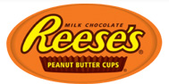
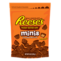
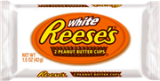

REESE'S PEANUT BUTTER CUPS
perfect gone nuts
Reese's Peanut Butter Cups are candy bars made of chocolate-coated peanut butter marketed by The Hershey Company that pioneered the way to the generic peanut butter cup. They were created in 1928 by H. B. Reese, a former dairy farmer and shipping foreman for Milton S. Hershey. Reese was inspired by Hershey, so he left dairy farming to start his own candy business. The H. B. Reese Candy Co. was established in the basement of Reese's house in Hershey, Pennsylvania,[1] and used Hershey chocolate in his confections. Reese's Peanut Butter Cups were his most popular candy, and Reese eventually discontinued his other line
RECIPES
- Valentines
- cookies
- brownies
- ice-cream
- candy
- pies and tarts
- desserts
- toppings
- snacks
PRODUCTS
REESE'S MINI'S
Bite-sized and unwrapped REESE'S Minis. They're perfectly tiny.
Calories
Total Calories:170
REESE'S BIG PEANUT BUTTER CUP

Peanut butter fans will love this snack that delivers an extra dose of peanut butter in each cup. Surrounded by rich milk chocolate, the REESE'S Peanut Butter BIG CUP is sure to satisfy anyone who wants a peanut butter fix
Calories
Total Calories:300
REESE'S WHITE PEANUT BUTTER CUP
Want peanut butter cups with a sweeter side? Try REESE'S White Peanut Butter Cups
Calories
Total Calories:220
REESE'S CRISPY CRUNCHY BAR

Peanut butter fans will surely dig this crispy, crunchy treat made with chocolate, REESE'S peanut butter, crunchy peanut butter candy and chopped peanuts
Calories
Total Calories:260
Marketing and Advertising
In the United States, Reese's Peanut Butter Cups typically come in packs of 4, 10 or 20 in distinctive orange packaging, set on thin but rigid paperboard trays. The "Classic" two-pack is a .75 oz. cup, the "King Size" four-pack is a .70 oz. cup and the "Lunch" eight-pack is a .55 oz. cup. "Large Size" packs of three .70 oz. cups are also available. The "mini" cups come in various bag sizes and foil colors for seasonal themes like red, gold and green for the Christmas holiday season. In Canada, where they are packaged as Reese Peanut Butter Cups (except Reese's pieces), but still widely referred to by their American name, they come in a standard pack of three .55 oz. cups or the king-size variation with four cups. In the United Kingdom and Ireland, they were originally available only in two-packs, though are now only available in three-packs, imported from Canada. In 2008 Reese's Peanut Butter Cups were made available in Europe by Hydro Texaco and 7-Eleven. In Australia, Reese's products can be found in many specialty candy stores, as well as from American stores such as CostcoThe Hersheys Company